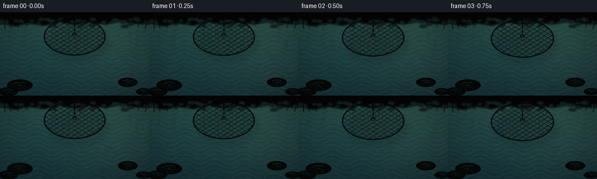
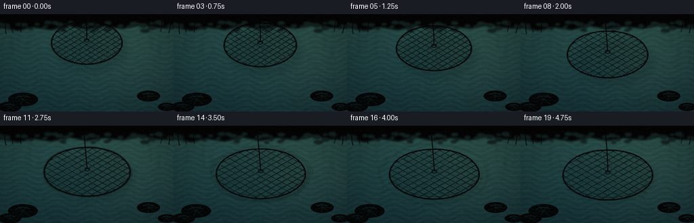
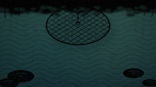
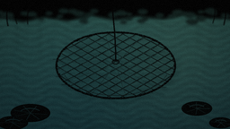

CODING AGENTS AS PIXEL WORLD MODELS
traex/DeepSeek-V4.1-Flash · mechanics_0013
点击播放 · 原生 RGB 像素
逐轮保存的候选
回放视频、检查图与代码变化。
每份候选均可单独播放。实际图片检查记录在下方工具轨迹中。
候选 01播放与检查图
点击播放 · 原生 RGB 像素


展开代码变化
--- 上一保存版本
+++ 本次保存版本
@@ -0,0 +1,550 @@
+from __future__ import annotations
+
+import math
+from pathlib import Path
+
+import numpy as np
+from PIL import Image, ImageDraw, ImageFilter
+
+import artifact_io
+
+
+WIDTH = 256
+HEIGHT = 144
+FRAMES = 20
+FPS = 4.0
+SCALE = 4
+W = WIDTH * SCALE
+H = HEIGHT * SCALE
+CASE_DIR = Path(__file__).resolve().parent
+
+
+def smoothstep(value: float) -> float:
+ value = min(1.0, max(0.0, value))
+ return value * value * (3.0 - 2.0 * value)
+
+
+def ease_in_out(value: float) -> float:
+ value = min(1.0, max(0.0, value))
+ return 0.5 - 0.5 * math.cos(math.pi * value)
+
+
+def resize_float(array: np.ndarray, size: tuple[int, int]) -> np.ndarray:
+ image = Image.fromarray(np.clip(array * 255.0, 0, 255).astype(np.uint8), "L")
+ image = image.resize(size, Image.Resampling.BICUBIC)
+ return np.asarray(image, dtype=np.float32) / 255.0
+
+
+def make_noise(seed: int, size: tuple[int, int], blur: float = 0.0) -> np.ndarray:
+ rng = np.random.default_rng(seed)
+ low = rng.random((max(2, size[1] // 9), max(2, size[0] // 9))).astype(np.float32)
+ field = resize_float(low, size)
+ if blur > 0:
+ image = Image.fromarray((field * 255).astype(np.uint8), "L")
+ field = np.asarray(image.filter(ImageFilter.GaussianBlur(blur)), dtype=np.float32) / 255.0
+ field -= field.min()
+ field /= max(1e-5, field.max())
+ return field
+
+
+XN, YN = np.meshgrid(
+ np.linspace(0.0, 1.0, W, dtype=np.float32),
+ np.linspace(0.0, 1.0, H, dtype=np.float32),
+)
+NOISE_A = make_noise(713, (W, H), 2.0 * SCALE)
+NOISE_B = make_noise(1429, (W, H), 4.0 * SCALE)
+NOISE_C = make_noise(2903, (W, H), 1.0 * SCALE)
+
+VIGNETTE = np.clip(
+ 1.0
+ - 0.24 * ((XN - 0.5) / 0.61) ** 2
+ - 0.20 * ((YN - 0.54) / 0.68) ** 2,
+ 0.68,
+ 1.0,
+).astype(np.float32)
+
+
+def composite_rgba(base: np.ndarray, layer: Image.Image) -> np.ndarray:
+ rgba = np.asarray(layer, dtype=np.float32) / 255.0
+ alpha = rgba[:, :, 3:4]
+ return base * (1.0 - alpha) + rgba[:, :, :3] * alpha
+
+
+def make_water(t: float) -> np.ndarray:
+ phase = 2.0 * math.pi * t
+ depth = YN
+
+ # Deep pond water with a cool far edge and a warmer sunlit near-right area.
+ top = np.array([42.0, 83.0, 77.0], dtype=np.float32)
+ bottom = np.array([18.0, 48.0, 53.0], dtype=np.float32)
+ color = top[None, None, :] * (1.0 - depth[:, :, None] ** 0.72)
+ color += bottom[None, None, :] * (depth[:, :, None] ** 0.72)
+
+ sun = np.exp(
+ -((XN - 0.77) / 0.29) ** 2 - ((YN - 0.52) / 0.55) ** 2
+ ).astype(np.float32)
+ color += sun[:, :, None] * np.array([8.0, 7.0, 3.0], dtype=np.float32)
+
+ n1 = np.roll(NOISE_A, int(round(2.5 * math.sin(phase))), axis=1)
+ n2 = np.roll(NOISE_B, int(round(1.5 * math.cos(phase))), axis=0)
+ color += (n1[:, :, None] - 0.48) * np.array([5.0, 7.0, 6.0], dtype=np.float32)
+
+ # Long, low-amplitude waves make the surface legible without looking like sea.
+ warp = 0.55 * np.sin(2.0 * math.pi * (XN * 5.0 + 0.18 * phase))
+ wave = np.sin(2.0 * math.pi * (YN * 18.0 + warp) + 0.75 * phase)
+ wave += 0.42 * np.sin(
+ 2.0 * math.pi * (YN * 31.0 - 0.28 * np.sin(XN * 8.0 - 0.4 * phase)) + 1.7
+ )
+ wave *= 0.55 + 0.45 * n2
+ color += wave[:, :, None] * np.array([2.1, 4.5, 4.2], dtype=np.float32)
+
+ crest = np.clip((wave - 0.38) / 1.2, 0.0, 1.0) ** 4
+ glint_texture = np.clip((NOISE_C - 0.54) * 3.5, 0.0, 1.0)
+ glint = crest * (0.20 + 0.80 * glint_texture) * (0.38 + 0.62 * sun)
+ color += glint[:, :, None] * np.array([38.0, 48.0, 35.0], dtype=np.float32)
+
+ # A soft reflected bank is visible only near the far waterline.
+ bank_band = np.clip((0.30 - YN) / 0.30, 0.0, 1.0) ** 2
+ reflection = bank_band * (0.40 + 0.60 * NOISE_B)
+ color = color * (1.0 - 0.12 * reflection[:, :, None])
+ color += reflection[:, :, None] * np.array([1.5, 8.0, 2.0], dtype=np.float32)
+
+ return np.clip(color, 0, 255)
+
+
+def bezier_points(
+ p0: tuple[float, float],
+ p1: tuple[float, float],
+ p2: tuple[float, float],
+ count: int = 30,
+) -> list[tuple[float, float]]:
+ result = []
+ for i in range(count):
+ q = i / (count - 1)
+ x = (1 - q) ** 2 * p0[0] + 2 * (1 - q) * q * p1[0] + q * q * p2[0]
+ y = (1 - q) ** 2 * p0[1] + 2 * (1 - q) * q * p1[1] + q * q * p2[1]
+ result.append((x * SCALE, y * SCALE))
+ return result
+
+
+def draw_background(base: np.ndarray, t: float) -> np.ndarray:
+ bank = Image.new("RGBA", (W, H), (0, 0, 0, 0))
+ d = ImageDraw.Draw(bank)
+
+ # Irregular mossy bank at the top edge.
+ bank_points = [(-20 * SCALE, -8 * SCALE)]
+ xs = [-20, 4, 26, 49, 75, 101, 128, 153, 181, 207, 233, 276]
+ ys = [20, 19, 23, 18, 22, 16, 21, 17, 20, 15, 19, 21]
+ bank_points += [(x * SCALE, y * SCALE) for x, y in zip(xs, ys)]
+ bank_points += [(276 * SCALE, -8 * SCALE)]
+ d.polygon(bank_points, fill=(35, 47, 28, 255))
+ d.line(
+ [(x * SCALE, (y + 1) * SCALE) for x, y in zip(xs, ys)],
+ fill=(88, 104, 55, 180),
+ width=2 * SCALE,
+ joint="curve",
+ )
+
+ # Small moss clumps soften the straight edge.
+ rng = np.random.default_rng(83)
+ for _ in range(44):
+ x = int(rng.uniform(0, WIDTH) * SCALE)
+ y = int(rng.uniform(12, 25) * SCALE)
+ r = int(rng.uniform(2, 7) * SCALE)
+ shade = int(rng.uniform(45, 80))
+ d.ellipse((x - r, y - r // 2, x + r, y + r // 2), fill=(shade, shade + 18, shade - 8, 150))
+
+ bank = bank.filter(ImageFilter.GaussianBlur(1.2 * SCALE))
+ base = composite_rgba(base, bank)
+
+ # Reed reflections, kept soft and darker than the water.
+ reflection = Image.new("RGBA", (W, H), (0, 0, 0, 0))
+ rd = ImageDraw.Draw(reflection)
+ for x, height, width, alpha in [
+ (18, 54, 1.0, 76),
+ (29, 43, 0.8, 58),
+ (43, 61, 1.2, 68),
+ (221, 52, 1.0, 64),
+ (235, 67, 1.1, 72),
+ (248, 45, 0.8, 54),
+ ]:
+ bend = math.sin(t * math.pi + x) * 2.0
+ rd.line(
+ bezier_points((x, 23), (x + bend, 44), (x + bend * 0.5, height), 22),
+ fill=(19, 43, 30, alpha),
+ width=max(1, int(width * SCALE)),
+ )
+ reflection = reflection.filter(ImageFilter.GaussianBlur(2.2 * SCALE))
+ return composite_rgba(base, reflection)
+
+
+def draw_lily_pad(
+ layer: Image.Image,
+ cx: float,
+ cy: float,
+ rx: float,
+ ry: float,
+ angle: float,
+ colors: tuple[tuple[int, int, int], tuple[int, int, int]],
+) -> None:
+ d = ImageDraw.Draw(layer, "RGBA")
+ box = ((cx - rx) * SCALE, (cy - ry) * SCALE, (cx + rx) * SCALE, (cy + ry) * SCALE)
+ d.ellipse(box, fill=(*colors[0], 238), outline=(*colors[1], 245), width=max(1, SCALE))
+
+ # Notch and radial veins.
+ notch_len = rx * 0.72
+ ax = (cx + math.cos(angle) * notch_len) * SCALE
+ ay = (cy + math.sin(angle) * notch_len * ry / rx) * SCALE
+ d.polygon(
+ [
+ (cx * SCALE, cy * SCALE),
+ (ax - math.sin(angle) * 2.8 * SCALE, ay + math.cos(angle) * 2.8 * SCALE),
+ (ax + math.sin(angle) * 2.8 * SCALE, ay - math.cos(angle) * 2.8 * SCALE),
+ ],
+ fill=(25, 65, 52, 255),
+ )
+ for k in range(7):
+ a = angle + 0.43 + k * 0.82
+ d.line(
+ [
+ (cx * SCALE, cy * SCALE),
+ ((cx + math.cos(a) * rx * 0.84) * SCALE, (cy + math.sin(a) * ry * 0.84) * SCALE),
+ ],
+ fill=(*colors[1], 90),
+ width=max(1, int(0.6 * SCALE)),
+ )
+ d.arc(
+ ((cx - rx * 0.55) * SCALE, (cy - ry * 0.55) * SCALE,
+ (cx + rx * 0.55) * SCALE, (cy + ry * 0.55) * SCALE),
+ 205,
+ 330,
+ fill=(157, 178, 112, 95),
+ width=max(1, SCALE),
+ )
+
+
+def draw_lily_pads(base: np.ndarray, t: float) -> np.ndarray:
+ layer = Image.new("RGBA", (W, H), (0, 0, 0, 0))
+ drift = 0.65 * math.sin(2.0 * math.pi * t)
+ draw_lily_pad(layer, 34 + drift, 126, 22, 10, -0.24, ((42, 82, 48), (91, 117, 59)))
+ draw_lily_pad(layer, 14 - drift, 137, 17, 7.5, 2.72, ((38, 76, 50), (84, 108, 58)))
+ draw_lily_pad(layer, 219 - drift * 0.7, 121, 17, 8, 3.42, ((44, 85, 52), (100, 120, 61)))
+ draw_lily_pad(layer, 246 + drift * 0.5, 137, 13, 6, 2.88, ((37, 74, 48), (83, 106, 54)))
+ return composite_rgba(base, layer)
+
+
+def draw_reeds(base: np.ndarray, t: float) -> np.ndarray:
+ layer = Image.new("RGBA", (W, H), (0, 0, 0, 0))
+ d = ImageDraw.Draw(layer)
+ sway = 1.6 * math.sin(2.0 * math.pi * t + 0.4)
+
+ reeds = [
+ ((9, 29), (4 + sway, 7), (16 + sway, 0), 1.35, (42, 58, 27, 235)),
+ ((19, 27), (14 - sway, 10), (25 - sway, 3), 1.05, (58, 70, 32, 225)),
+ ((31, 27), (29 + sway, 8), (38 + sway, 2), 1.20, (45, 61, 29, 225)),
+ ((237, 26), (243 - sway, 7), (234 - sway, 1), 1.15, (46, 61, 28, 220)),
+ ((249, 28), (254 + sway, 10), (247 + sway, 3), 1.40, (39, 56, 26, 230)),
+ ]
+ for p0, p1, p2, width, color in reeds:
+ points = bezier_points(p0, p1, p2, 30)
+ d.line(points, fill=color, width=max(1, int(width * SCALE)), joint="curve")
+
+ # Cattail heads add a recognizable pond silhouette.
+ for x, y, angle in [(17, 4.5, -0.10), (239, 4.0, 0.08)]:
+ length = 10
+ dx, dy = math.sin(angle) * length, -math.cos(angle) * length
+ d.line(
+ [(x * SCALE, y * SCALE), ((x + dx) * SCALE, (y + dy) * SCALE)],
+ fill=(64, 44, 24, 245),
+ width=int(2.2 * SCALE),
+ )
+ d.line(
+ [((x + 0.7) * SCALE, (y - 1) * SCALE), ((x + dx + 0.7) * SCALE, (y + dy - 1) * SCALE)],
+ fill=(124, 91, 49, 130),
+ width=max(1, SCALE),
+ )
+
+ layer = layer.filter(ImageFilter.GaussianBlur(0.35 * SCALE))
+ return composite_rgba(base, layer)
+
+
+def ellipse_polyline(
+ cx: float,
+ cy: float,
+ rx: float,
+ ry: float,
+ count: int = 180,
+ wobble: float = 0.0,
+ phase: float = 0.0,
+) -> list[tuple[float, float]]:
+ points = []
+ for i in range(count + 1):
+ a = 2.0 * math.pi * i / count
+ r = 1.0 + wobble * math.sin(5.0 * a + phase)
+ points.append(((cx + math.cos(a) * rx * r) * SCALE, (cy + math.sin(a) * ry * r) * SCALE))
+ return points
+
+
+def draw_contact_ripples(base: np.ndarray, t: float, cx: float, cy: float, rx: float, ry: float) -> np.ndarray:
+ contact_start = 0.47
+ if t <= contact_start:
+ return base
+ q = min(1.0, (t - contact_start) / 0.53)
+ layer = Image.new("RGBA", (W, H), (0, 0, 0, 0))
+ d = ImageDraw.Draw(layer)
+ for i, delay in enumerate((0.0, 0.12, 0.25)):
+ local = max(0.0, min(1.0, (q - delay) / max(0.05, 1.0 - delay)))
+ if local <= 0:
+ continue
+ spread = 1.02 + 0.32 * ease_in_out(local)
+ fade = int(105 * (1.0 - local) ** 1.25)
+ wobble = 0.010 + 0.018 * local
+ pts = ellipse_polyline(
+ cx,
+ cy,
+ rx * spread,
+ ry * spread,
+ count=160,
+ wobble=wobble,
+ phase=0.9 * i + 2.0 * math.pi * local,
+ )
+ d.line(pts, fill=(104, 143, 125, fade), width=max(1, int(0.9 * SCALE)), joint="curve")
+ shadow_pts = [(x + SCALE, y + SCALE) for x, y in pts]
+ d.line(
+ shadow_pts,
+ fill=(8, 33, 31, max(0, fade // 2)),
+ width=max(1, int(0.7 * SCALE)),
+ joint="curve",
+ )
+ layer = layer.filter(ImageFilter.GaussianBlur(0.25 * SCALE))
+ return composite_rgba(base, layer)
+
+
+def net_state(t: float) -> dict[str, float]:
+ open_p = ease_in_out(min(1.0, t / 0.78))
+ descend = smoothstep(min(1.0, t / 0.72))
+ contact = smoothstep((t - 0.47) / 0.20)
+ bob = contact * 1.1 * math.sin(2.0 * math.pi * min(1.0, max(0.0, (t - 0.47) / 0.53)) * 1.5)
+ return {
+ "cx": 128.0 + 0.8 * open_p,
+ "cy": 42.0 + 30.0 * descend + bob,
+ "rx": 52.0 + 14.0 * open_p,
+ "ry": 32.0 + 5.0 * open_p,
+ "open": open_p,
+ "descend": descend,
+ "contact": contact,
+ }
+
+
+def draw_net_layer(state: dict[str, float], t: float) -> Image.Image:
+ cx, cy = state["cx"], state["cy"]
+ rx, ry = state["rx"], state["ry"]
+ layer = Image.new("RGBA", (W, H), (0, 0, 0, 0))
+ d = ImageDraw.Draw(layer)
+ mask = Image.new("L", (W, H), 0)
+ md = ImageDraw.Draw(mask)
+ md.ellipse(
+ ((cx - rx) * SCALE, (cy - ry) * SCALE, (cx + rx) * SCALE, (cy + ry) * SCALE),
+ fill=255,
+ )
+
+ mesh = Image.new("RGBA", (W, H), (0, 0, 0, 0))
+ mesh_d = ImageDraw.Draw(mesh)
+ delta = 0.235
+ values = np.arange(-1.8, 1.81, delta)
+
+ # Two diagonal families create the characteristic diamond mesh.
+ for family in (-1.0, 1.0):
+ for c in values:
+ pts = []
+ for u in np.linspace(-1.15, 1.15, 36):
+ v = c + family * u
+ if abs(v) > 1.2:
+ continue
+ drape = 1.2 * (1.0 - u * u) * (0.4 + 0.6 * state["open"])
+ x = (cx + rx * u) * SCALE
+ y = (cy + ry * v + drape) * SCALE
+ pts.append((x, y))
+ if len(pts) > 1:
+ mesh_d.line(pts, fill=(175, 190, 169, 218), width=max(1, int(0.80 * SCALE)), joint="curve")
+ mesh_d.line(
+ [(x + 0.65 * SCALE, y + 0.65 * SCALE) for x, y in pts],
+ fill=(29, 52, 45, 92),
+ width=max(1, int(0.65 * SCALE)),
+ joint="curve",
+ )
+
+ # A few radial cords give the mesh visible structure.
+ for k in range(10):
+ a = 2.0 * math.pi * k / 10.0 + 0.13
+ inner = (cx + math.cos(a) * rx * 0.10, cy + math.sin(a) * ry * 0.10)
+ outer = (cx + math.cos(a) * rx * 0.94, cy + math.sin(a) * ry * 0.94 + 0.9)
+ mesh_d.line(
+ [(inner[0] * SCALE, inner[1] * SCALE), (outer[0] * SCALE, outer[1] * SCALE)],
+ fill=(189, 197, 170, 92),
+ width=max(1, int(0.55 * SCALE)),
+ )
+
+ mesh.putalpha(Image.composite(mesh.getchannel("A"), Image.new("L", (W, H), 0), mask))
+ layer = Image.alpha_composite(layer, mesh)
+ d = ImageDraw.Draw(layer)
+
+ # Braided, weighted perimeter.
+ border = ellipse_polyline(
+ cx,
+ cy,
+ rx,
+ ry,
+ count=240,
+ wobble=0.004,
+ phase=0.3,
+ )
+ d.line(border, fill=(50, 63, 46, 245), width=max(2, int(2.1 * SCALE)), joint="curve")
+ d.line(border, fill=(191, 178, 129, 245), width=max(1, int(1.15 * SCALE)), joint="curve")
+ for i in range(0, 240, 3):
+ x, y = border[i]
+ d.ellipse(
+ (x - 0.65 * SCALE, y - 0.65 * SCALE, x + 0.65 * SCALE, y + 0.65 * SCALE),
+ fill=(226, 211, 160, 180),
+ )
+
+ # Small lead weights read as a casting net, not a decorative grid.
+ for k in range(22):
+ a = 2.0 * math.pi * k / 22.0
+ x = (cx + math.cos(a) * rx * 0.995) * SCALE
+ y = (cy + math.sin(a) * ry * 0.995) * SCALE
+ d.ellipse((x - 1.35 * SCALE, y - 1.0 * SCALE, x + 1.35 * SCALE, y + 1.0 * SCALE), fill=(42, 47, 37, 245))
+ d.arc(
+ (x - 1.1 * SCALE, y - 0.8 * SCALE, x + 1.1 * SCALE, y + 0.8 * SCALE),
+ 195,
+ 330,
+ fill=(151, 156, 123, 180),
+ width=max(1, SCALE // 2),
+ )
+
+ # Central gathering ring and slack hauling line.
+ center_y = cy - ry * 0.10
+ d.ellipse(
+ ((cx - 4.1) * SCALE, (center_y - 2.7) * SCALE, (cx + 4.1) * SCALE, (center_y + 2.7) * SCALE),
+ outline=(52, 58, 43, 235),
+ width=max(1, int(1.1 * SCALE)),
+ )
+ d.arc(
+ ((cx - 3.1) * SCALE, (center_y - 2.0) * SCALE, (cx + 3.1) * SCALE, (center_y + 2.0) * SCALE),
+ 200,
+ 340,
+ fill=(201, 193, 151, 210),
+ width=max(1, SCALE),
+ )
+ rope_slack = 1.7 * math.sin(2.0 * math.pi * t + 0.8)
+ rope = bezier_points(
+ (cx, center_y - 1.5),
+ (cx + rope_slack, max(0.0, center_y - 21.0)),
+ (123.0 + 0.5 * rope_slack, -8.0),
+ 35,
+ )
+ d.line(rope, fill=(45, 54, 42, 225), width=max(2, int(1.7 * SCALE)), joint="curve")
+ d.line(rope, fill=(187, 173, 122, 235), width=max(1, int(0.85 * SCALE)), joint="curve")
+
+ # Wet highlights on the leading, lower edge.
+ highlight_alpha = int(55 + 100 * state["contact"])
+ d.arc(
+ ((cx - rx * 0.91) * SCALE, (cy - ry * 0.91) * SCALE,
+ (cx + rx * 0.91) * SCALE, (cy + ry * 0.91) * SCALE),
+ 18,
+ 162,
+ fill=(226, 231, 195, highlight_alpha),
+ width=max(1, int(0.65 * SCALE)),
+ )
+ return layer
+
+
+def apply_net_shadow(base: np.ndarray, net: Image.Image, state: dict[str, float]) -> np.ndarray:
+ contact = state["contact"]
+ offset_x = int((7.5 - 4.5 * contact) * SCALE)
+ offset_y = int((10.5 - 6.0 * contact) * SCALE)
+ blur = (4.8 - 1.8 * contact) * SCALE
+
+ alpha = np.asarray(net.getchannel("A"), dtype=np.float32) / 255.0
+ ellipse = Image.new("L", (W, H), 0)
+ d = ImageDraw.Draw(ellipse)
+ d.ellipse(
+ (
+ (state["cx"] - state["rx"]) * SCALE,
+ (state["cy"] - state["ry"]) * SCALE,
+ (state["cx"] + state["rx"]) * SCALE,
+ (state["cy"] + state["ry"]) * SCALE,
+ ),
+ fill=255,
+ )
+ silhouette = np.asarray(ellipse, dtype=np.float32) / 255.0
+ shadow_alpha = 0.27 * silhouette + 0.72 * alpha
+ shadow_alpha = np.roll(shadow_alpha, (offset_y, offset_x), axis=(0, 1))
+ shadow_img = Image.fromarray(np.clip(shadow_alpha * 255.0, 0, 255).astype(np.uint8), "L")
+ shadow_alpha = np.asarray(shadow_img.filter(ImageFilter.GaussianBlur(blur)), dtype=np.float32) / 255.0
+ strength = 0.50 - 0.13 * contact
+ shadow_color = np.array([8.0, 27.0, 28.0], dtype=np.float32)
+ return base * (1.0 - strength * shadow_alpha[:, :, None]) + shadow_color * (strength * shadow_alpha[:, :, None])
+
+
+def draw_surface_sparkles(base: np.ndarray, state: dict[str, float], t: float) -> np.ndarray:
+ contact = state["contact"]
+ if contact <= 0:
+ return base
+ layer = Image.new("RGBA", (W, H), (0, 0, 0, 0))
+ d = ImageDraw.Draw(layer)
+ cx, cy, rx, ry = state["cx"], state["cy"], state["rx"], state["ry"]
+ for k in range(13):
+ a = 0.18 + math.pi * (k / 12.0)
+ pulse = 0.5 + 0.5 * math.sin(2.0 * math.pi * t * 1.7 + k * 1.8)
+ x = cx + math.cos(a) * rx * (0.99 + 0.035 * pulse)
+ y = cy + math.sin(a) * ry * (0.99 + 0.035 * pulse)
+ length = (2.0 + 2.8 * pulse) * SCALE
+ alpha = int(contact * (55 + 105 * pulse))
+ d.line(
+ [(x * SCALE - length, y * SCALE), (x * SCALE + length, y * SCALE)],
+ fill=(213, 222, 174, alpha),
+ width=max(1, int(0.55 * SCALE)),
+ )
+ return composite_rgba(base, layer.filter(ImageFilter.GaussianBlur(0.2 * SCALE)))
+
+
+def finish_frame(image: np.ndarray, t: float) -> np.ndarray:
+ image = image * VIGNETTE[:, :, None]
+ image = np.clip(image, 0, 255)
+ pil = Image.fromarray(image.astype(np.uint8), "RGB")
+ pil = pil.resize((WIDTH, HEIGHT), Image.Resampling.LANCZOS)
+ result = np.asarray(pil, dtype=np.float32)
+
+ # A restrained grade and fine grain avoid flat procedural gradients.
+ result = 4.0 + result * 0.985
+ rng = np.random.default_rng(9100 + int(round(t * FRAMES)))
+ grain = rng.normal(0.0, 1.15, (HEIGHT, WIDTH, 1)).astype(np.float32)
+ result += grain
+ return np.clip(result, 0, 255).astype(np.uint8)
+
+
+def render_frame(index: int) -> np.ndarray:
+ t = index / FRAMES
+ water = make_water(t)
+ water = draw_background(water, t)
+ water = draw_lily_pads(water, t)
+
+ state = net_state(t)
+ water = draw_contact_ripples(water, t, state["cx"], state["cy"], state["rx"], state["ry"])
+ water = apply_net_shadow(water, draw_net_layer(state, t), state)
+ net = draw_net_layer(state, t)
+ water = composite_rgba(water, net)
+ water = draw_surface_sparkles(water, state, t)
+ water = draw_reeds(water, t)
+ return finish_frame(water, t)
+
+
+def main() -> None:
+ frames = np.stack([render_frame(i) for i in range(FRAMES)], axis=0)
+ artifact_io.save(frames, CASE_DIR)
+ print(f"saved {frames.shape} RGB frames to {CASE_DIR}")
+
+
+if __name__ == "__main__":
+ main()
可观测工具轨迹
实际执行的命令与返回图片。
命令 1exit 0
/bin/bash -c 'cat prompt.txt'
命令 2exit 0
/bin/bash -c 'cat GENERATION_RULES.md'
命令 3exit 0
/bin/bash -c 'cat task_spec.json'
命令 4exit 0
/bin/bash -c "find . -maxdepth 2 -type f -printf '%p\\n' | sort | head -200"
命令 5exit 0
/bin/bash -c "sed -n '1,260p' artifact_io.py"
命令 6exit 0
/bin/bash -c "sed -n '1,260p' player_template.html"
命令 7exit 0
/bin/bash -c "python - <<'PY'
import numpy, PIL
print('numpy', numpy.__version__)
print('PIL', PIL.__version__)
PY"命令 8exit 0
/bin/bash -c 'python generate.py'
命令 9exit 0
/bin/bash -c 'ls -lh pixels.npz index.html inspection.png frames/*.png | tail -8'
命令 10exit 0
/bin/bash -c "python - <<'PY'
from pathlib import Path
import numpy as np
from PIL import Image
p = Path('.')
z = np.load(p / 'pixels.npz')
print('pixels.npz key:', z.files[0], 'shape:', z[z.files[0]].shape, 'dtype:', z[z.files[0]].dtype)
for name in ('frames/00.png', 'frames/19.png', 'inspection.png', 'index.html', 'generate.py'):
q = p / name
print(name, 'exists:', q.exists(), 'bytes:', q.stat().st_size if q.exists() else 0)
a = np.asarray(Image.open(p / 'frames/00.png'))
b = np.asarray(Image.open(p / 'frames/19.png'))
print('frame shape/dtype:', a.shape, a.dtype, 'changed pixels first-v-last:', int(np.any(a "'!= b, axis=2).sum()))
PY'视觉工具实际返回图片 1

视觉工具实际返回图片 2

视觉工具实际返回图片 3

视觉工具实际返回图片 4

保存候选 1 份；完成命令 10 次；可验证图片返回 4 张。原始 API 响应与完整日志保留在本地。